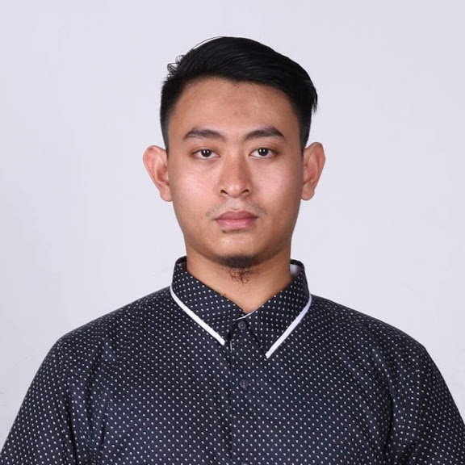

Thai Nguyen, Vietnam - bboydas5@gmail.com - (+84) 372655896 - LinkedIn
Experienced Turfgrass Management Worker with a proven track record in maintaining turfgrass in private golf courses. Skilled in operating machinery and conventional tools related to field work, particularly mowing machine. Adept at multitasking, problem-solving, and ensuring efficient coordination in the field, with a strong focus on customer satisfaction and maintaining organized workflows. Quick learner with a proven ability to grasp new tools and technologies effectively.
March 2017 - November 2017
Responsive Web Design - 2024
International and Computing Core Certification (IC3) Global Standard 4 - 2018
Bachelor of Environmental Science and Management (2014 - 2018)
Master of Environmental Science (2022 - Present)